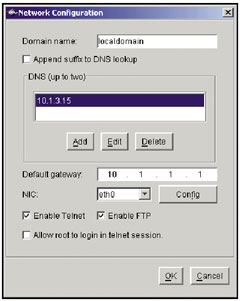
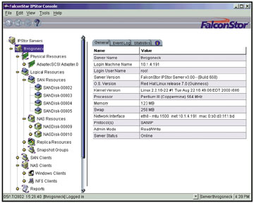
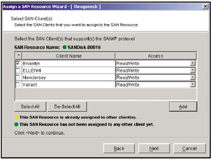
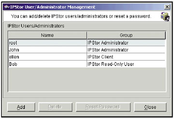

Александр Глинских,
к. т. н.
Продолжение. Первую статью цикла о ПО для систем хранения данных см. "BYTE/Россия" No 1'2004.
Технологии виртуализации ресурсов хранения
Виртуализация отнюдь не относится к новым, суперсовременным технологиям; идеи виртуализации различных вычислительных ресурсов тем или иным образом реализовывались и ранее. Возможно, кому-то из читающих эти строки даже довелось (как и автору в свое время) поработать в так называемой системе виртуальных машин на ЕС ЭВМ или с некоторыми другими приложениями технологии виртуализации. В новых же технологических условиях виртуализация ресурсов памяти оказалась вновь востребованной, вступив в очередной виток своего развития.
Необходимость в виртуализации ресурсов хранения объясняется рядом причин. Прежде всего это резкий рост объемов корпоративных данных, связанный не в последнюю очередь с появлением новых бизнес-приложений, требовательных к возможностям хранения данных: сверхбольших баз данных в генетике, медицине, геологии, астрономии и космических исследованиях, мультимедиа и т. д.; огромных архивов электронной почты; объемных баз данных MRP/ERP-систем и систем CAD/CAM/CAE, других корпоративных приложений. Общий объем хранимых в мире корпоративных данных оценивается сегодня во многие сотни петабайт и постоянно увеличивается.
Обострились проблемы хранения и управления большими объемами данных. Это связано и с широким распространением "островов" данных (под ними понимаются данные, находящиеся на различных носителях в гетерогенных системах хранения, нередко территориально удаленных друг от друга и работающих под управлением разных ОС). Для обслуживания таких "островов", отличающихся сложностью конфигураций аппаратных и программных средств, а также разнообразием используемых технологий, необходимы дополнительные материальные и человеческие ресурсы.
Ухудшилась оперативность доступа к данным, находящимся в гетерогенных системах хранения, что приводит к значительным финансовым потерям для компаний, бизнес которых связан с оперативной обработкой актуальной и критически важной информации.
В той или иной степени перечисленные выше проблемы решаются с помощью технологий виртуализации ресурсов хранения.
Под виртуализацией ресурсов хранения обычно понимается отображение любого количества разнородных носителей, устройств и систем хранения (JBOD, RAID, RAIT и т. д.) в виде единого хранилища данных (так называемого виртуального пула), управление которым осуществляется централизованно.
Существует и определение IDC, согласно которому под виртуализацией ресурсов хранения понимается применение ПО, упрощающего управление сложными конфигурациями памяти за счет использования логических представлений физических ресурсов хранения.
Можно сказать, что при применении технологий виртуализации "разрываются" физические связи между серверами и устройствами хранения разных типов, а физическая память преобразуется в единый логический пул, состоящий из отдельных гетерогенных устройств хранения, прозрачный доступ к которым обеспечивается независимо от их технических особенностей и территориального расположения.
Что дают технологии виртуализацииТехнологии виртуализации ресурсов хранения позволяют:
|
В настоящее время отраслевые аналитики выделяют три основных типа виртуализации ресурсов хранения:
- системная;
- на уровне сети хранения данных (SAN);
- серверная.
Системная виртуализация обычно реализуется в однородных (гомогенных) системах хранения на уровне RAID-контроллеров дисковых массивов, обеспечивающих создание виртуальных дисков необходимого объема (из общего дискового пула), клонов и мгновенных снимков (snapshots).
В технологии виртуализации на уровне SAN существуют два основных подхода: симметричная (in-band) и асимметричная виртуализация (out-of-band). При симметричной виртуализации между серверами и устройствами хранения помещается специальное устройство, в котором содержатся правила преобразования физических ресурсов хранения в логические ресурсы (с последними и работают серверы). Устройство же асимметричной виртуализации подключается непосредственно к серверу или коммутатору/маршрутизатору (вне пути передачи данных - out-of-band) и управляет передачей метаданных (информацией о данных) между приложением и сервером (или коммутатором/маршрутизатором) на их пути к устройству хранения, подсоединенному к SAN.
Серверная виртуализация реализуется с помощью специальных программных средств, установленных на серверах и обеспечивающих прозрачный доступ к данным, находящимся в любом месте корпоративной системы хранения (как через локальные сети, так и через глобальные сети и SAN). Технология серверной виртуализации позволяет работать с архитектурами систем хранения DAS, NAS и SAN.
Основные производители ПО виртуализации и их решения
По прогнозу Gartner Group, к 2006 г. объем мирового рынка средств виртуализации ресурсов хранения достигнет 8,6 млрд долл. Как видно, рынок достаточно перспективен, что не могло не привлечь к нему внимание (разработкой средств виртуализации ресурсов хранения сейчас занимаются несколько десятков компаний). Сегодня наиболее активны на этом рынке молодые фирмы, недавние start-up. Следует отметить, что именно им и принадлежат наибольшие технологические достижения. Маститых участников рынка, конечно, можно понять: ведь технологии виртуализации ресурсов хранения практически устраняют зависимость от аппаратных и программных средств конкретного вендора, что сводит на нет конкурентные преимущества известных производителей. Может, именно поэтому они и не спешат с разработкой средств виртуализации?
Среди начинающих компаний - разработчиков ПО виртуализации ресурсов хранения можно отметить DataCore Software, FalconStor Software, Fujitsu Softek, Storage Technology, Systina Software и т. д. Серьезное внимание программным средствам виртуализации ресурсов хранения уделяют также IBM/Tivoli, EMC, Veritas Software, Sun Microsystems, HDS, Hewlett-Packard, DataDirect Networks, StorageTek, TrueSAN, StorageApps (теперь часть Hewlett-Packard), Vicom и другие. При этом одни компании разрабатывают средства виртуализации самостоятельно, а другие идут по пути ОЕМ-партнерства и приобретения соответствующих технологий (здесь можно назвать, например, Hewlett-Packard, Fujitsu Softek, EMC, Sun Microsystems и т. д.).
Назовем следующие решения для виртуализации ресурсов хранения, уже получившие определенную известность на мировом рынке (или проанонсированные их производителями): IPStor (от FalconStor Software), SANsymphony (от DataCore Software), Softek Virtualization (от Fujitsu Softek), Foundation Suite (от Veritas Software), TotalStorage Virtualization Family (от IBM/Tivoli), Storage Virtualization Engine (от Vicom), VersaStor (от Hewlett-Packard), Virtual Storage Manager (от StorageTek), Systina VM for Linux (от Systina Software) и т. д. Каждое из этих решений по праву заслуживает подробного обзора, однако вследствие ограниченности объема статьи мы рассмотрим лишь некоторые из них.
IPStor
Разработчик ПО IPStor, выпущенного весной 2001 г., - компания FalconStor Software (http://www.falconstor.com). Компания основана в 2000 г., ее учредители в свое время были владельцами фирмы Cheyenne Software и создали известную программу ARCserve (права на нее позднее приобрела Computer Associates).
IPStor представляет собой многофункциональную (и, пожалуй, наиболее многогранную по своим возможностям - в сравнении с существующими сейчас на рынке аналогичными программными средствами) программу виртуализации ресурсов хранения, агрегирования и обеспечения коллективного доступа к сетям хранения данных через инфраструктуры IP/iSCSI, Fibre Channel и SCSI при работе в средах Windows, Linux и Solaris. В числе основных возможностей IPStor - резервное копирование, зеркалирование, репликация, выполнение мгновенных снимков, передача данных на уровне файлов и блоков по стандартным сетям IP (с реализацией функциональности SAN и NAS - пользователь "видит" ресурсы IPStor как SAN или NAS) и многое другое. Основные "потребители" IPStor - корпоративные центры обработки данных, телекоммуникационные операторы, ASP-провайдеры и xSP-провайдеры. В сентябре 2003 г. выпущена четвертая версия данного программного продукта, которым пользуются уже более 300 компаний во всем мире. В начале 2004 г. ожидается выход пятой версии IPStor.
Благодаря любезности компании "Тринити" (http://www.trinity.spb.ru) - кстати, одной из первых в России начавшей применять IPStor в своих решениях и поддерживающей ресурс http://www.falconstor.ru - автору удалось протестировать данное ПО в ходе его инсталляции и в работе. Некоторыми общими впечатлениями об этом, безусловно, интересном ПО виртуализации ресурсов хранения хотелось бы поделиться с читателями.
Прежде всего отметим хорошо написанное и подробное руководство по эксплуатации, вполне информативное для быстрой установки и конфигурирования IPStor. Следует сказать, что серверную часть IPStor можно установить на компьютеры платформы Intel x86 (ОС Red Hat Linux v7.3 и Red Hat Linux Advanced Server version 2.1 с поддержкой rpm), платформы SPARC c версией ядра 108528-12 и выше. Для повышения отказоустойчивости серверы IPStor можно объединять в кластер.
Автор проводил тестирование IPStor только на базе ОС Red Hat Linux v7.3. Судя по документации, установка для платформы SPARC отличается лишь командами настройки сервера. Процесс установки IPStor прост и не требует глубоких познаний в области операционных систем (рис. 1).
|  | Рис. 1. Настройка сервера при установке IPStor. |
Главная особенность IPStor, которую необходимо учитывать при инсталляции сервера, - это скомпилированное ядро с предварительно заданной конфигурацией. По этой причине при установке особенно важно корректно выбрать аппаратную часть сервера (она должна поддерживаться в поставляемом ядре IPStor). Определенную помощь в правильном выборе может оказать перечень оборудования и операционных систем, поддерживаемых в IPStor, находящийся по адресу http://www.falconstor.com/certification_matrix_active.asp.
После установки серверной части практически все операции администрирования сервера выполняются с административной консоли (рис. 2). Административная консоль IPStor - это Java-приложение, оно может выполняться на платформах Windows, Linux или Solaris, которые поддерживают Java-машину версии 2. Для установки консоли необходимо иметь права администратора для ОС Windows NT/2000 или права root для ОС Linux и Solaris.
|  | Рис. 2. Общий вид административной консоли IPStor. |
Для предоставления блочного доступа к ресурсам IPStor на каждый компьютер необходимо установить клиентское ПО.
Блочный доступ к ресурсам хранения может осуществляться как через обычную сеть (поверх протокола IP), так и через сеть хранения данных (по протоколу Fibre Channel). Процедура установки клиентского ПО не вызвала никаких затруднений. Отметим только, что (судя по документации) после установки клиента в среде Windows NT/2000 систему требуется перезагрузить, для остальных же ОС перезагрузка не требуется (это позволяет подключать к ресурсам IPStor имеющиеся серверы без остановки всей системы).
Для получения файлового доступа к ресурсам хранения (в данном случае сервер IPStor выполняет роль NAS-устройства) дополнительное ПО устанавливать не нужно. Файловый доступ предоставляется по протоколам CIFS и NFS.
Важно отметить, что доступ к ресурсам SAN предоставляется после регистрации клиента на сервере на основе IP-адреса и пароля. Для аутентификации используется протокол Диффи - Хеллмана. Каждому клиенту может быть назначен любой SAN-ресурс (рис. 3) с одним из следующих уровней доступа:
- "Чтение/запись" - только один клиент может выполнять чтение/запись на ресурс, всем остальным в доступе будет отказано;
- "Только чтение" - клиент может только читать содержимое ресурса без права записи;
- "Неэксклюзивное чтение/запись" - несколько клиентов одновременно могут выполнять чтение/запись на ресурс (требуется для построения кластерных конфигураций).
|  | Рис. 3. Назначение ресурса клиентам. |
В свою очередь, доступ к ресурсам NAS возможен либо по паролям, установленным для доступа к каждому ресурсу, либо путем выбора режима авторизации с запросом учетных записей с другого компьютера/домена. Полезное свойство - возможность интеграции сервера IPStor в Microsoft Active Directory. Следует также отметить простоту управления пользователями (рис. 4).
|  | Рис. 4. Панель управления пользователями. |
Для повышения производительности данные, передаваемые при SAN-доступе, не шифруются. Безопасность передаваемых данных можно обеспечить, используя шифрованные файловые системы, где клиент передает и получает с сервера уже зашифрованные данные. Кроме того, для администрирования сервера можно задать несколько имен с различным уровнем доступа. Важно также, что IPStor указывает все задействованные его сервисами протоколы и номера портов, что дает возможность закрыть неиспользуемые порты, повысив тем самым безопасность системы.
Судя по эксплуатационной документации и некоторому личному опыту автора, функциональность IPStor позволяет решить все основные вопросы, связанные с построением отказоустойчивых компьютерных систем и решений для защиты от катастроф. Можно выделить следующие основные типы функций IPStor, обеспечивающие выполнение этой задачи:
- зеркалирование;
- cоздание и ведение версий мгновенных снимков (и восстановление с них данных);
- интеграция с распространенными СУБД;
- интеграция со средствами резервного копирования;
- обеспечение отказоустойчивых соединений;
- организация кэширования данных.
Очень полезна также возможность сохранения/восстановления текущей конфигурации. Иначе говоря, при выходе из строя сервера IPStor (если он работает не в IPStor-кластере) можно установить его на другой компьютер и восстановить сохраненную конфигурацию.
Конфигурацию всех функций IPStor легко настроить. Настройка выполняется как несколькими кликами "мышки" в административной консоли, так и через интерфейс командной строки (что позволяет писать скрипты и более тесно интегрировать IPStor с информационной системой). Следует также отметить, что при выполнении ряда функций, таких, как восстановление утраченных/испорченных данных, может потребоваться повторное подключение клиентов к устройству, но этого можно избежать, изначально грамотно спланировав конфигурацию.
Общее впечатление автора от IPStor - многофункциональная и простая в работе программа виртуализации ресурсов хранения, позволяющая создать мощную отказоустойчивую информационную систему.
SANsymphony
Не менее известна на мировом рынке и компания DataCore Software (http://www.datacore.com), один из основных конкурентов FalconStor Software. Компания, основанная в 1998 г. выходцами из Veritas Software, Seagate Technology LLC и IBM, одной из первых в мире начала специализироваться на разработке ПО виртуализации ресурсов хранения.
DataCore Software предлагает программу виртуализации ресурсов хранения SANsymphony, первая версия которой была выпущена еще в мае 2000 г. Эта программа достаточно популярна в мире. Ее продвижением занимаются многие компании - и даже конкурент DataCore Software, корпорация IBM (естественно, совместно со своими решениями). ПО SANsymphony используют многие десятки предприятий из разных отраслей (космонавтика, связь, образование, здравоохранение, финансы, розничная торговля, социальные услуги, телекоммуникации и т. д.).
SANsymphony представляет собой пример реализации технологии симметричной виртуализации (in-band) и объединяет все дисковые ресурсы хранения SAN в единый виртуальный пул, которым можно управлять централизованно с одной консоли (c подключениями типов Fibre Channel, SCSI, EIDE, SSA, iSCSI). При этом для серверов приложений виртуальные тома выглядят как дисковые приводы типа DAS.
SANsymphony устанавливается на Intel-сервере, подключенном к коммутатору Fibre Channel и находящемся на пути передачи данных между серверами и устройствами хранения. SANsymphony позволяет проводить мониторинг SAN (с графическим и текстовым отображением), в ходе которого определяется необходимость в наращивании памяти для обслуживания нужд приложения, сервера или пользователя (увеличивать память возможно с приращением до 128 Мбайт). Обеспечивается идентификация различных устройств в составе SAN, в ходе которого создается образ SAN, отображаемый системному администратору.
В SANsymphony есть функции встроенного кэширования, средства локальной и удаленной репликации данных (двусторонней). Это ПО позволяет снять нагрузку по выполнению резервного копирования с серверов приложений и локальных сетей. Защита доступа к виртуальным томам обеспечивается с помощью Storage Domain Servers.
SANsymphony работает со всеми распространенными операционными системами (Unix, Windows, NetWare, MacOS и Linux) и дисковыми массивами. Цены на SANsymphony начинаются от 20 тыс. долл. (за серверную часть), что достаточно типично для программных решений виртуализации ресурсов хранения. В настоящее время выпускаются версия начального уровня (поддерживающая один виртуальный пул памяти) и сетевая версия. Осенью 2003 г. выпущена версия 5.2 с поддержкой ОС Microsoft Windows 2003. В начале 2004 г. ожидается уже шестая версия SANsymphony со значительно улучшенными возможностями.
ПО виртуализации от Softek Virtualization
Весной 2001 г. корпорация Fujitsu учредила компанию Fujitsu Software Technology Corporation (Fujitsu Softek, http://www.softek.com), основной задачей которой стала разработка программных средств для систем хранения данных. Изначально базой для разработки этих программных средств служила технология виртуализации и управления мультивендорными сетями хранения данных, созданная компанией Amdahl (и принадлежащая Fujitsu). Следует отметить, что Fujitsu Softek активно сотрудничает с компанией DataCore Software, будучи ее ОЕМ-партнером. Более того, в феврале 2002 г. Fujitsu Softek заключила лицензионное соглашение о приобретении у DataCore Software ее технологии виртуализации (виртуализационного движка) для реализации его в своих программных продуктах. Результатом полномасштабного сотрудничества Fujitsu Softek и DataCore Software и стала программа виртуализации ресурсов хранения Softek Virtualization (основанная на ПО SANsymphony), активно продвигаемая в настоящее время в первую очередь среди многочисленных клиентов и партнеров корпорации Fujitsu.
ПО Softek Virtualization - еще один пример применения технологии симметричной виртуализации дисковой памяти от разных производителей в сетях хранения данных (на уровне блоков). В числе основных возможностей Softek Virtualization назовем следующие:
- централизованное управление;
- визуализация инфраструктуры SAN (при совместном применении с ПО Softek SANView);
- постоянная доступность критически важных приложений благодаря динамическому выделению ресурсов хранения;
- внесерверное и внесетевое резервное копирование;
- выполнение мгновенных снимков (Snapshot Imaging Across the SAN);
- синхронное сетевое зеркалирование (Network Mirroring);
- удаленное асинхронное зеркалирование через локальные и глобальные сети с использованием протоколов TCP/IP (Asynchronous IP Mirroring - AIM);
- повторная синхронизация зеркал томов;
- создание избыточных маршрутов ввода-вывода с перенаправлением данных в случае сбоев по альтернативным маршрутам (Alternate Pathing for Windows NT Application Servers);
- повышение производительности работы систем хранения за счет усовершенствованных алгоритмов кэширования.
ПО виртуализации от Veritas Software
Корпорация Veritas Software (http://www.veritas.com), основанная в 1989 г., cконцентрировала свои усилия на бизнесе разработки ПО для систем хранения в 1997 г. Veritas Software выпускает как стандартные готовые версии своих программных средств, так и оригинальные версии ОЕМ-продуктов для компаний Hewlett-Packard, IBM и Sun Microsystems. По данным Gartner Group, в 2001 г. Veritas Software занимала первое место на рынке ПО виртуализации ресурсов хранения и управления томами (79,9% доходов рынка).
Разработке программных средств виртуализации ресурсов хранения всецело посвящена одна из инициатив Veritas Software - V3 SAN Initiative. В число технологий, разработанных в рамках этой инициативы, входят, в частности, Veritas V3 SAN Access Layer и Veritas SANPoint Control. Кроме того, технологии виртуализации реализованы в той или иной мере в таких программных решениях от Veritas Software, как Foundation Suite (Volume Manager, File System), SANPoint Foundation Suite, SANPoint Control, ServPoint NAS, ServPoint SAN, NetBackup DataCenter (виртуализация ленточных устройств) и NetBackup Storage Migrator.
Veritas Volume Manager - одна из наиболее известных и распространенных на мировом рынке программ виртуализации дисковой памяти типа DAS. В число основных возможностей этого многофункционального программного продукта входят:
- управление корпоративными системами хранения данных и сетями хранения;
- виртуализация ресурсов хранения в пределах сети хранения;
- при совместном использовании с Veritas File System - возможность применения технологий кластеризации и восстановления после сбоев, автоматизированного управления, резервного копирования, управления иерархической памятью (HSM), удаленного Web-управления;
- централизованное управление и администрирование;
- идентификация устройств хранения данных и анализ способов обращения к ним (позволяет выполнять балансировку нагрузки на систему ввода-вывода без переконфигурирования дисковых массивов);
- зеркалирование данных на устройствах кратковременного хранения.
По оценке Gartner Group, в 2001 г. доля ПО Veritas Volume Manager на мировом рынке ПО виртуализации ресурсов хранения достигала 79%.
ПО виртуализации от IBM/Tivoli
Корпорация IBM (http://www.ibm.com) хорошо известна на рынке средств виртуализации ресурсов хранения и фокусирует свои усилия на создании решений для сетей хранения данных. Отметим в первую очередь технологию StorageTank, разработанную компанией Tivoli Systems (входящей в состав IBM) и представленную в 2002 г. Эта технология позволяет серверам Unix, Windows NT и Linux осуществлять доступ к виртуальному пулу памяти сети хранения данных (к дисковым и ленточным массивам разных производителей), совместно используемому другими серверами (также разных вендоров), пользователями или приложениями. Она не зависит от инфраструктуры SAN fabric и поддерживает технологии Fibre Channel, Gigabit Ethernet и InfiniBand.
В мае 2003 г. корпорация IBM анонсировала целое семейство решений для виртуализации ресурсов хранения в сетях хранения данных - IBM TotalStorage Virtualization Family. В состав семейства вошли решение IBM TotalStorage SAN Volume Controller (состоящее из двух серверов IBM eServer xSeries, работающих под управлением ОС Linux, и программ виртуализации ресурсов хранения от IBM) и интегрированное решение IBM TotalStorage SAN Integration Server (оно включает решение SAN Volume Controller, системы хранения IBM TotalStorage FAStT600 емкостью до 83 Тбайт, коммутаторы Fibre Channel, маршрутизаторы и концентраторы). В этих решениях реализованы такие возможности, как передача управления при отказе (failover), зеркалируемая кэш-память, автоматический рестарт сетевых узлов и т. д.
В октябре 2003 г. в состав семейства IBM Storage Virtualization Family также было включено интегрированное решение IBM TotalStorage SAN File System, предназначенное для централизованного управления множеством файлов (в том числе сверхбольших) в гетерогенной сети хранения данных. Оно обеспечивает общую файловую систему для серверов Unix и Windows и состоит из серверов xSeries (работающих под управлением ОС Linux) и программы IBM SAN File System, основанной на технологии IBM StorageTank.
Перспективы технологий виртуализации
Перспективы технологий виртуализации ресурсов хранения на мировом рынке в значительной степени зависят от успешности решения нескольких основных проблем.
Несогласованность действий большинства производителей. До сих пор в отрасли не сформировалось единство подходов к виртуализации ресурсов хранения. Более того, уже разработано довольно много таких подходов, что объясняется в немалой степени различием архитектур устройств и систем хранения от разных производителей - ведь на рынке программных средств виртуализации работают несколько десятков как всемирно известных вендоров, так и начинающих фирм, предлагающих наиболее "продвинутые", по их мнению, подходы. Между этими подходами существует определенная конкуренция (особенно между симметричной и асимметричной виртуализацией). Кроме того, многие отраслевые производители сейчас работают разобщенно, не желая раскрывать свои технологические секреты, чтобы не утратить конкурентные преимущества на этом достаточно перспективном рынке. Такая разобщенность подходов и действий хорошо видна корпоративным пользователям, и в этом одна из причин их достаточно осторожного отношения к казалось бы весьма перспективным технологиям виртуализации ресурсов хранения.
Отсутствие установившихся стандартов в области виртуализации ресурсов хранения. Эта проблема логично вытекает из несогласованности действий отраслевых производителей и значительно усложняет выбор конкретного средства виртуализации. Как следствие, корпоративным пользователям приходится выбирать соответствующее их запросам средство виртуализации, полагаясь в первую очередь на свой здравый смысл и опыт, а также учитывая стоимость предлагаемого решения.
Медлительность крупных производителей при разработке и выпуске на рынок технологий виртуализации ресурсов хранения - здесь еще совсем молодые компании существенно опережают более известных конкурентов по скорости вывода на рынок и функциональности своих продуктов. Несмотря на громкие и многообещающие анонсы, крупные производители значительно отстают от своих широко декларируемых планов выпуска продуктов виртуализации. Например, реализация технологии виртуализации VersaStor от компании Hewlett-Packard появится в массовой продаже не раньше 2004 г. Определенные трудности со своевременным выпуском проанонсированных программных средств виртуализации ресурсов хранения есть также у компаний Veritas Software, EMC и IBM/Tivoli.
Недостаточная технологическая завершенность большинства идей, предлагаемых сейчас отраслевыми производителями в области виртуализации ресурсов хранения, - эту проблему отмечают многие отраслевые аналитики. Например, рассмотрим отказоустойчивость систем, в которых используются устройства симметричной виртуализации. Любой сбой в работе этих устройств приведет к недоступности для серверов всех ресурсов хранения, так как образуется единая точка отказа. Поэтому в ряде случаев требуется резервирование самих устройств симметричной виртуализации. Кроме того, так как все операции ввода-вывода осуществляются непосредственно через устройство симметричной виртуализации, то возникают определенные ограничения на производительность всей системы. Можно еще добавить, что, поскольку в рассматриваемом случае истинная структура данных скрыта от серверов, усложняется использование внутренних процедур дисковых массивов (например, удаленной репликации).
Несмотря на значительные средства, вкладываемые производителями в рекламу, масштабные усилия отраслевых аналитиков и специализированных СМИ, продвижение технологий виртуализации ресурсов хранения на мировом рынке идет со значительными трудностями. Согласно оценке консалтинговой компании Cambridge Computer Services, основной барьер для широкого распространения технологий виртуализации ресурсов хранения - недостаточная степень их понимания и принятия пользователями (ведь ни один ИТ-менеджер не хочет быть уволенным за принятие неправильного решения о внедрении новой и недешевой технологии).
Тем не менее в ближайшие годы следует ожидать более широкого распространения технологий виртуализации ресурсов хранения, в первую очередь программных (кстати, в 2003 г. уже несколько тысяч компаний по всему миру использовали средства виртуализации памяти в корпоративных системах хранения). Со временем сыграет свою роль и постепенное снижение стоимости программных средств виртуализации ресурсов хранения (которые пока еще достаточно дороги).
Отраслевые аналитики считают, что возможность виртуализации ресурсов хранения становится одним из ключевых и необходимых элементов полнофункциональной сети хранения данных и одним из решающих факторов при выборе поставщика решений для корпоративной системы хранения данных. Утверждение отраслевого стандарта CIM (Common Information Model), разрабатываемого в рамках инициативы SNIA Storage Management Initiative (SMI), также будет способствовать развитию технологий виртуализации. По прогнозу отраслевых аналитиков, в ближайшем будущем технологии виртуализации ресурсов хранения будут активно продвигаться во всех сегментах рынка - начального, среднего и верхнего уровней. И здесь решающее преимущество в конкурентной борьбе будут иметь компании, чьи программные продукты виртуализации ресурсов хранения уже получили известность и определенное распространение на мировом рынке (причем совершенно необязательно это будут крупные производители).
Продолжение следует